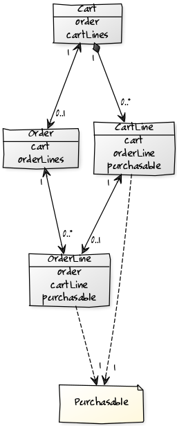
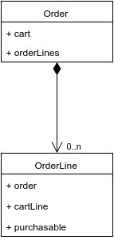

Cart Architecture #
This is one of the most important parts of the whole project. How Elcodi's cart works? How it's been designed? And how can I deal with it?
We will show you how we have designed all the model and why have we decided this architecture. It is important for you to understand the design in order to detect all possible entries and modification points, to make the Cart component as much customized as you need.
Introduction #
Let's start by determining what the Cart Component should take care about. Well, it's not difficult at all, so we are working in an E-commerce. The component itself takes care about all related to the Cart and the Order. The component provides you a complete service layer for your application, so knowing and understanding this layer will help you a lot in your own implementation.
We will split all the model in two parts, the Cart part and the Order part. Both parts are connected but they can (and should) be treated in a very isolated way.

First of all, forget about the Purchasable instance. This is just the way we will refer to the concept of Product (please, read the Product Architecture chapter in order to know more about it. Let's focus on how the Cart and Order are built.
Cart #
The bucket itself. Every customer has it's own cart, and it's life is connected to the session and to the customer as well. This means that even if you change the device, and as long as you're logged in, then you will be able to retrieve the cart from the database.
Some parts of the cart are not stored in database, like the prices. Because of some products from your cart can be disabled between page views, or because their prices can be modified as well, every time you request your cart, prices are reloaded and saved locally, in your object life. Of course, this means two things:
- Your cart loading consumes some resources in each request
- You cannot lookup in your database by these values
Anyway, this strategy helps a lot in your stored carts status. This means that you will not store invalid prices.
The Cart model introduces a new object called Cart Line.
Cart Line #
Everytime a new purchasable object is added into a Cart, you must save, at least, one extra information about this relation (cart and purchasable): the quantity. Because of this, you cannot relate directly both elements. Of course, if the purchasable object needs more information about the relation, for example color, size or any single text, you should save them all as well.
For this, we will work with an extra man-in-the-middle class called CartLine. In this class we'll save the Cart, the purchasable object and all this information. CartLine is designed using Object Composition. It means that the life of all CartLine instances are coupled to the life of the Cart instance.

Loading the cart #
As we said, the cart is loaded each time, but, who loads it? In fact, and
because of our service layer, you will find that loading cart is as easy as
using an event dispatcher called elcodi.event_dispatcher.cart.
$cart = $this
->cartRepository
->find(1);
$this
->cartEventDispatcher
->dispatchCartLoadEvents($cart);
Let's check as well how to inject the event listener. In that case we are injecting both the event dispatcher and the cart repository, for cart retrieving.
services:
my_cart_loader:
class: My\Cart\Loader\Class
arguments:
- @elcodi.repository.cart
- @elcodi.event_dispatcher.cart
After that call, your cart will be completely loaded, including prices and checks, and invalid cart lines will be safely removed. Of course, and because the project uses a strong event layer, some events will be dispatched during the process.
The question then is... how can I know that a cart has been loaded? Well, easy indeed.
$cart = $this
->cartRepository
->find(1);
$isLoaded = $cart->isLoaded();
// $isLoaded === false
$this
->cartEventDispatcher
->dispatchCartLoadEvents($cart);
$isLoaded = $cart->isLoaded();
// $isLoaded === true
Adding Purchasables #
The main action of a cart is to add a new Product, right? Well, as you will see in the Product architecture chapter, we are not working with products, but with Purchasable instances.
Each purchasable must be added into the cart by using the CartManager, a service that is intended for managing Purchasables and Lines in a very intuitive way.
Let's see a small example of how to use the service.
$cart;
$purchasable = $this
->productFactory()
->create();
$this
->cartManager
->addPurchasable(
$cart,
$purchasable,
3
);
In this example we have used the Product factory and the cart manager. Let's see the dependency injection definition of the fictitious service.
services:
my_service:
class: My\Service\Namespace
arguments:
- @elcodi.factory.product
- @elcodi.manager.cart
Of course, and because Purchasable is not a real class but an interface, we
must add any Purchasable implementation. Product and Variant are our
implementations, so in this example we use Product.
After calling method addPurchasable, your cart will have 3 units of this
product only if they are really available to be purchased. Otherwise, you will
get some exceptions. The cart is automatically reloaded as well, and
all prices are rebuilt again.
This method dispatches these events: * cart_line.onadd
Removing Purchasables #
You can remove purchasables as well, by using another method in the service CartManager. Let's see an example using the same service and construction definition than before.
$cart;
$purchasable = $this
->productFactory()
->create();
$this
->cartManager
->removePurchasable(
$cart,
$purchasable,
3
);
After calling the method, your product units will be decreased as many times as the last value of the call defines. If the value is higher or equal than the quantity of the purchasable in the cart, then this line is removed from the cart.
After that, the cart is automatically reloaded as well, and all prices are rebuilt again.
This method dispatches these events: * cart_line.onadd only if the purchasable is removed from the cart
Adding a coupon #
You can add some coupons as well in your cart. Because we think that both concepts are not the same and shouldn't be coupled at all, we decided to separate them in two components.
Both components have their own events, so all logic regarding how to add coupons into the cart is placed in a third component called CartCoupon. To know a little bit more about coupons, please read Coupon Architecture chapter.
For adding a new coupon into the cart, you need to use the service
CartCouponManager. This service has some interesting methods for the
management of all coupons in your cart.
Let's see an example.
$cart;
$couponCode = 'coupon5%';
$this
->cartCouponManager
->addCouponByCode(
$cart,
$couponCode
);
Assuming that your service depends only on the cart coupon manager, then this should be the dependency injection definition.
services:
my_service:
class: My\Service\Namespace
arguments:
- @elcodi.manager.cart_coupon
After this action, the coupon is inserted into the cart and the values of the cart are recomputed. During the association of both elements, some problems can occur, for example, when two incompatible coupons are inserted in the same cart. Then, you have to expect specific exceptions.
You can add a coupon as well with the Coupon instance as well, using the same CartCouponManager.
$cart;
$couponCode = 'coupon5%';
$coupon = $this
->couponRepository
->findOneByCode('coupon5%');
$this
->cartCouponManager
->addCoupon(
$cart,
$coupon
);
The definition of that example is not the same than the last one, so this one
depends on the CouponRepository service as well.
This method dispatches these events: * cart_coupon.onapply
Removing a coupon #
You can remove a coupon from a cart using the same service than the last example.
$cart;
$couponCode = 'coupon5%';
$this
->cartCouponManager
->removeCouponByCode(
$cart,
$couponCode
);
You can remove as well the coupon with the Coupon instance.
$cart;
$couponCode = 'coupon5%';
$coupon = $this
->couponRepository
->findOneByCode('coupon5%');
$this
->cartCouponManager
->removeCoupon(
$cart,
$coupon
);
After these actions, the cart is completely reloaded, like other actions.
This method dispatches these events: * cart_coupon.onremove
Getting Cart coupons #
Given a cart, you should be able to get all coupons applied. We'll use the same manager again.
$cart;
$cartCoupons = $this
->cartCouponManager
->getCoupons();
Cart transformation #
Once the cart must be converted to an order, there is a nice transformer for
that occasion. Let's see an example of that transformation. In that occasion, we
assume that getLoadedCart() returns an already loaded cart.
$cart = $this->getLoadedCart();
$order = $this
->cartOrderTransformer
->createOrderFromCart($cart);
This action produces as well some new events.
After this action, the cart becomes ordered
$cart = $this->getLoadedCart();
$order = $this
->cartOrderTransformer
->createOrderFromCart($cart);
$cartIsOrdered = $cart->isOrdered();
// $cartIsOrdered === true
Order #
The order should always be a plain copy of a cart. Because the object's behaviour should be as immutable as possible, all prices are calculated and saved in database.

Inside the entity, you will find this information:
- Cart where the order belongs
- Dimensions of the order (only physical orders)
- OrderLines, each one as a mirror of each CartLine
- Quantity of the order, total number of elements
- Prices from products, coupons, shipping and total.
- Addresses from delivering and billing
- Order States
Getting Order coupons #
Because both components are decoupled (cart and coupon), you need some
middleware for the order coupons retrieval. For this reason, the project
provides a service called OrderCouponManager for the management of all order
coupons. Let's see a simple example about how we can retrieve all coupons from
an Order instance.
$order;
$orderCoupons = $this
->orderCouponManager
->getCoupons($order);
Order states #
When an order is created, each instance can travel through an amount of predefined states.
With the basic implementation, you will find defined state machines for payment and shipping. To know more about this, please, read the Payments and the Shipping chapters